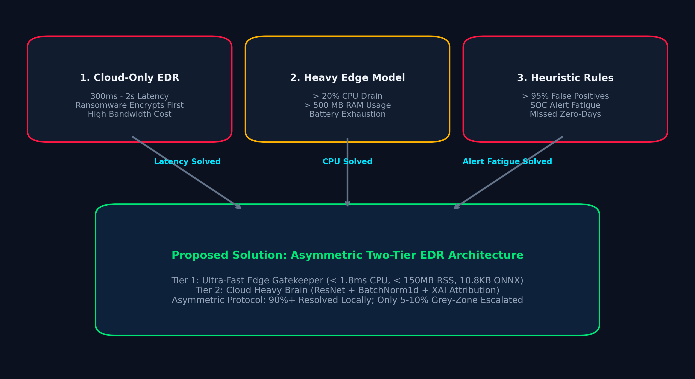
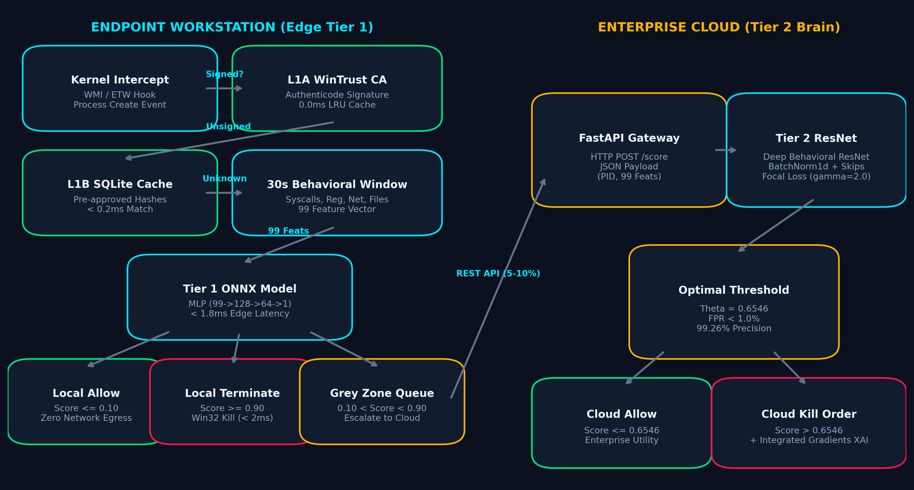
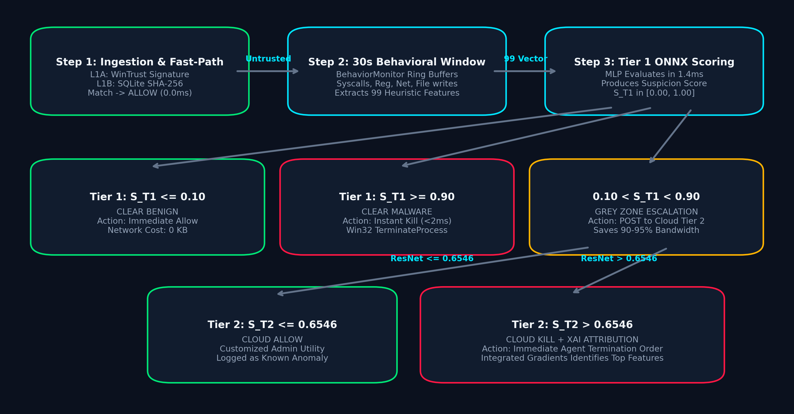
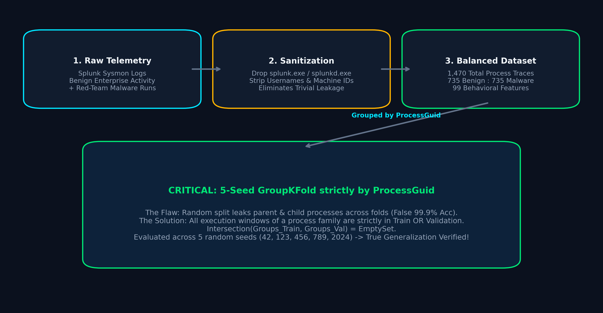
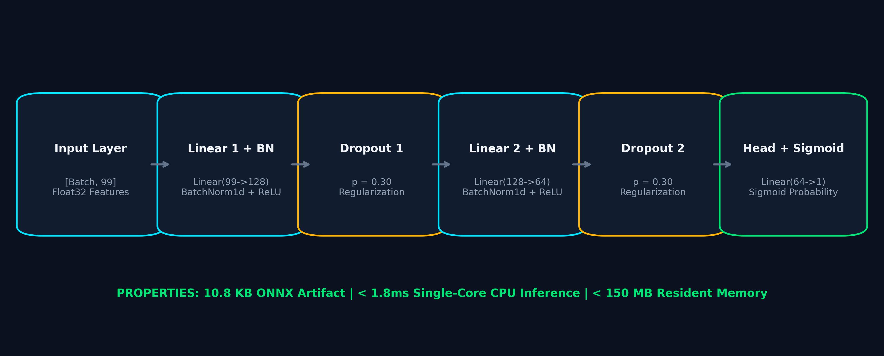
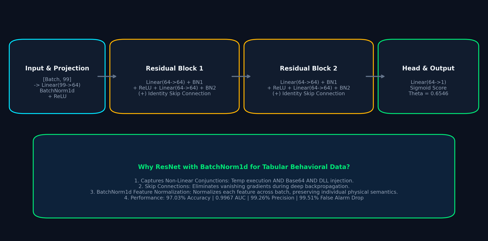
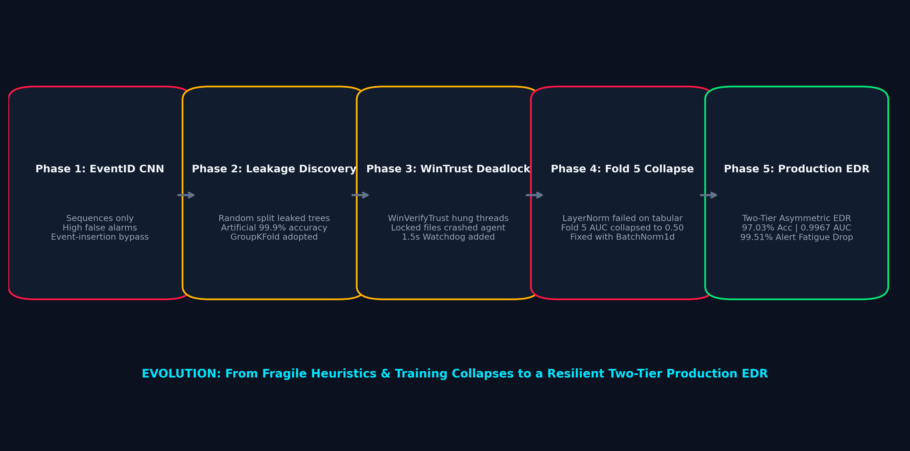

Welcome to the comprehensive architectural defense of our Telltale behavioral detection system. Here we unpack every design decision: from solving the classic "Compute vs. Context" dilemma to our 99-feature behavioral matrix, leak-free GroupKFold dataset validation, dual neural network architectures, and full Hinglish explanations for every schematic.
Why do existing antivirus and EDR solutions constantly fail in real enterprise environments? Let's break down the fundamental three-way engineering tradeoff.
Imagine a bank security guard taking a photo of every customer and sending it by mail to head-office for approval. By the time the reply comes back (300ms to 2,000ms later), the robber has already cleaned out the safe! Modern ransomware encrypts files in < 100 microseconds per file. Cloud-only latency means files are encrypted before the kill order arrives.
If you try to run heavy deep neural networks directly on the endpoint workstation, the agent consumes > 20% CPU and > 500 MB RAM. Laptops overheat, battery drains in 2 hours, user interfaces freeze, and IT admins or frustrated developers disable the antivirus altogether.
Legacy rule-based antivirus flags every unfamiliar script. The alarm screams whenever someone carries an umbrella because it resembles a crowbar! Over 95% of alarms are false positives. Security analysts get overwhelmed, silence the alerts, and true zero-day APT attacks slip right under the radar.

flowchart TD
subgraph LegacyProblems["The Traditional EDR Dilemma"]
A["All Telemetry Sent to Cloud"] -->|"Network Saturation & Bandwidth"| B["Network Delay: 300ms - 2,000ms"]
B --> C["Delayed Threat Kill: Ransomware Encrypts First!"]
D["Heavy Neural Nets on Edge"] -->|"High CPU & Memory"| E[">20% CPU & Battery Drain"]
E --> F["Endpoint Freezes & Agent Disabled"]
G["Static Signatures & Threshold Rules"] -->|"High False Positive Rate"| H["SOC Alert Fatigue: 95%+ False Alarms"]
H --> I["Missed True Zero-Day Threats"]
end
subgraph ProposedSolution["Telltale: Proposed Two-Tier Solution"]
J["Tier 1: Ultra-Fast Edge Gatekeeper (<1.8ms, <150MB RSS)"]
K["Tier 2: Deep Cloud Heavy Brain (ResNet + XAI Attribution)"]
L["Asymmetric Grey-Zone Escalation (Only 5-10% sent to Cloud)"]
J --> L
L --> K
end
LegacyProblems -.->|"Solved By"| ProposedSolution
Socho ek VIP Building ka Main Gate hai. Agar gate pe khada guard har aane-jane wale ki photo kheench kar door head-office bhejega approval ke liye, toh approval aane me 2 minute lag jayenge. Utni der me terrorist andar ghus kar tabahi macha chuka hoga! Aur agar gate pe hi 100 bodyguards aur 5 heavy X-ray machines laga doge, toh normal logon ki 2 kilometer lambi line lag jayegi aur sabka time barbad hoga. Legacy Antivirus me bhi yahi problem thi: Cloud slow hai, endpoint heavy hai, aur purane rules 95% jhoothi ghanti bajate hain!
Har event cloud bhejoge toh 300ms se 2 second lagenge. Ransomware 100 microseconds me file lock kar deta hai, isliye cloud late ho jata hai.
Workstation pe heavy AI model chaloge toh 20% CPU aur 500MB RAM khaa jayega. Laptop garam hoga aur user antivirus band kar dega.
Purane rules 95% false alarms dete hain. SOC analyst thak kar alarm ignore karne lagte hain aur asali virus nikal jata hai.
Endpoint pe chhota tezz guard (Tier 1 <1.8ms) jo 90% decision khud le, aur cloud me bada dimag (Tier 2 ResNet) jo sirf shakki cases dekhe!
Agar examiner pooche: "Bhai traditional EDR me aisi kya kami thi jo tumne yeh project banaya?" Toh seedha bolo: "Sir, industry me isko 'Compute vs. Context Trilemma' bolte hain. Humne compute ko edge pe aur deep context ko cloud pe split karke 99.51% false alarms suppress kiye aur response time 1.8ms kar diya."
Instead of choosing between edge speed and cloud depth, we split the defense responsibility asymmetrically.
Runs directly on the endpoint inside agent.py using an ultra-compact 10.8 KB ONNX Multi-Layer Perceptron (MLP).
It evaluates running processes in < 1.8 milliseconds on a single CPU core.
90% to 95% of software is resolved right here with zero cloud latency and zero network overhead.
When Tier 1 sees an ambiguous, obfuscated process with a score between 0.10 and 0.90, it doesn't guess. It dispatches a lightweight JSON payload (PID, process name, 99 features) to Cloud Tier 2. This cuts WAN egress and cloud API costs by 95%!
Hosted on FastAPI (server.py). A deep Behavioral Residual Network (ResNet with BatchNorm1d)
untangles complex non-linear multi-stage attacks (e.g. Temp execution + Base64 decode + DLL injection).
It applies an optimal threshold (Θ = 0.6546) and computes Explainable AI feature attributions.
Airport pe Green Channel aur Red Channel hota hai. Jo regular passengers hain jinke paas valid passport aur tickets hain, unhe metal detector pass karke 10 second me bahar nikal diya jata hai (Tier 1 Edge Allow). Agar kisi ke paas bomb ya bandook mil jaye toh security guard foran wahi gira kar hathkadi laga deta hai (Tier 1 Edge Kill <2ms). Lekin agar kisi ke bag me koi ajeeb suspicious chemical dikhe jisko security guard pehchan nahi pa raha, toh usko alag room me le jaake forensic lab se test karwaya jata hai (Tier 2 Cloud ResNet Brain)!
Pehle lakho processes ka raw data cloud jata tha jisse company ka lakho ka internet bill aata tha. Ab 90%+ data endpoint pe hi nipat jata hai.
10.8 KB ka ONNX model chala rahe hain, jo ek normal image se bhi chhota hai. Laptop pe 0% lag ya freezing aati hai.
Agar LockBit ya WannaCry run hua toh Tier 1 use 1.8ms me pehchan kar terminate kar deta hai, cloud ke reply aane ka intezar nahi karta!
Here is how every single execution event travels through our tiered defense pipeline, from initial Windows process spawn to cloud containment.

flowchart TB
subgraph Endpoint["ENDPOINT WORKSTATION (Edge Tier 1)"]
WMI["Windows WMI / ETW Hook"] -->|"Process Create Event"| WorkerPool["Thread Pool Worker"]
subgraph FastPath["Zero-Cost Fast-Path (0.0ms ML)"]
WorkerPool --> L1A{"L1A: WinTrust Authenticode\n(Digital Signatures)"}
L1A -->|"Valid Microsoft / Vendor"| LRU["LRU Verified Path Cache\n(ALLOW - 0.0ms)"]
L1A -->|"Unsigned / Unknown"| L1B{"L1B: SQLite B-Tree Whitelist\n(Approved SHA-256)"}
L1B -->|"Hash Match"| WhitelistDB["whitelist.db Match\n(ALLOW - <0.2ms)"]
end
subgraph DynamicObservation["Dynamic Behavioral Window"]
L1B -->|"Untrusted Binary"| Mon["BehaviorMonitor (30s Window)\nCircular Ring Buffers"]
Mon --> FeatureEngine["99 Behavioral Features\n[Batch, 99] Float32"]
end
subgraph EdgeInference["Tier 1 Edge Gatekeeper"]
FeatureEngine --> ONNX["Tier 1 ONNX Model\nMLP (99 -> 128 -> 64 -> 1)\n< 1.8ms CPU Latency"]
ONNX --> T1Gate{"Decision Gating\nScore = S_T1"}
end
T1Gate -->|"S_T1 <= 0.10"| AllowEdge["LOCAL ALLOW\n(Clean Benign)"]
T1Gate -->|"S_T1 >= 0.90"| KillEdge["LOCAL TERMINATE (< 2ms)\nWin32 TerminateProcess API"]
T1Gate -->|"0.10 < S_T1 < 0.90"| GreyZoneQueue["Asynchronous Grey-Zone Queue\n(Dispatched via REST API)"]
end
subgraph Cloud["ENTERPRISE CLOUD TIER 2 (Heavy Brain)"]
GreyZoneQueue -->|"HTTP POST /score\nJSON Payload"| CloudGateway["FastAPI Gateway (Port 8000)"]
CloudGateway --> T2ResNet["Tier 2 Behavioral ResNet\n(BatchNorm1d + Residual Skips)"]
T2ResNet --> T2Gate{"Optimal Threshold\nTheta = 0.6546"}
T2Gate -->|"S_T2 <= 0.6546"| CloudAllow["CLOUD ALLOW\nEnterprise Anomaly Noted"]
T2Gate -->|"S_T2 > 0.6546"| CloudKillOrder["CLOUD KILL DIRECTIVE\n+ Integrated Gradients XAI"]
end
CloudKillOrder -->|"Kill Command Payload"| WorkerPool
Jaise hi user kisi file (jaise test_dropper.exe ya chrome.exe) par double click karta hai,
Windows kernel me event trigger hota hai aur hamara EDR pipeline active ho jata hai.
Windows OS me jaise hi koi naya process banta hai, hamara background worker thread foran Process ID (PID) aur binary path capture kar leta hai.
Sabse pehle digital signature check hoti hai. Agar file Microsoft, Google ya Apple se officially signed hai toh bina kisi ML model ko disturb kiye 0.0ms me ALLOW kar diya jata hai!
Agar unsigned hai toh kya iska SHA-256 hash hamare local whitelist.db me pehle se safe marked hai? Match hone par <0.2ms me ALLOW.
Agar unknown file hai toh agent uske 30 seconds ke acts monitor karta hai: Registry changes, file creation, network connections, memory access. Inhe 99 mathematical features me convert kiya jata hai.
Workstation ke CPU pe chhota 10.8 KB model chal kar 0.00 se 1.00 ke beech ka suspicion score nikalta hai.
Score ≤ 0.10: Bilkul Safe (Allow).
Score ≥ 0.90: Pakka Virus! Win32 TerminateProcess API se <2ms me Kill.
0.10 se 0.90: Shakki Grey Zone! Cloud ko bhejo.
Cloud server (port 8000) pe heavy ResNet deep patterns check karta hai. Agar score > 0.6546 aaya toh cloud se instant Kill Command + XAI Reason endpoint ko wapas aati hai!
"Sir, hamare pipeline ki sabse badi khoobi yeh hai ki clean programs (L1A/L1B) aur direct dangerous malware (Score ≥ 0.90) ko Cloud ki zaroorat hi nahi padti! Cloud server sirf critical 5-10% grey-zone traffic handle karta hai."
How do we score an unknown binary or script? Let's trace the exact mathematical rules and sequence boundaries.

sequenceDiagram
autonumber
actor OS as Windows OS (Process Launch)
participant EDR as agent.py (Endpoint)
participant Cache as LRU / SQLite Whitelist
participant T1 as Tier 1 ONNX (<1.8ms)
participant Cloud as server.py (Tier 2 Cloud)
participant Log as agent.log / SOC Dashboard
OS->>EDR: New Process Spawn (e.g. brave.exe, powershell.exe)
EDR->>Cache: Check LRU Cache & WinTrust Signature (L1A/L1B)
alt Binary is Trusted & Validly Signed
Cache-->>EDR: Match Found (Microsoft / Google / Whitelisted Hash)
EDR->>Log: ALLOWED (Trusted / Zero Overhead)
else Binary is Unknown or Unsigned
Cache-->>EDR: Untrusted Binary
EDR->>EDR: Register into BehaviorMonitor (30s Window)
EDR->>EDR: Extract 99 Behavioral Features (File, Reg, Network, Process Tree)
EDR->>T1: Run ONNX Inference (99 Features)
T1-->>EDR: Return Tier-1 Suspicion Score (0.00 to 1.00)
alt Score <= 0.10 (Benign)
EDR->>Log: ALLOWED (Tier-1 Benign Score <= 0.10)
else Score >= 0.90 (Clear Malware)
EDR->>OS: Terminate Process immediately (taskkill / Win32 API)
EDR->>Log: MALWARE TERMINATED (Score >= 0.90)
else 0.10 < Score < 0.90 (Grey Zone)
EDR->>Log: [GREY ZONE] Escalating to Cloud Server (Score: X)
EDR->>Cloud: POST /score {process_name, tier1_score, features}
Cloud->>Cloud: Run Tier-2 ResNet Model
Cloud->>Cloud: Evaluate Optimal Operating Threshold (0.6546)
alt Cloud Score > 0.6546
Cloud-->>EDR: {"verdict": "KILL", "confidence": 0.88, "xai": {...}}
EDR->>OS: Terminate Process (Cloud Directed)
EDR->>Log: [CLOUD VERDICT] KILLED by Tier-2 Cloud ResNet
else Cloud Score <= 0.6546
Cloud-->>EDR: {"verdict": "ALLOW", "confidence": 0.32}
EDR->>Log: [CLOUD VERDICT] ALLOWED by Tier-2 Cloud ResNet
end
end
end
Socho ek police officer kisi suspect ko sadak par dekhta hai. Agar suspect ek chhota school student hai jiske paas bas kitaabein hain, toh officer usse foran jaane deta hai (Score ≤ 0.10). Agar suspect hath me AK-47 leke firing kar raha hai, toh officer seedha encounter/goli chala deta hai bina magistrate ko phone kiye (Score ≥ 0.90). Lekin agar suspect ne kala chashma aur bada coat pehna hai aur uske bag me wires dikh rahe hain, toh officer usse pakad kar High Court / Forensic Team ko bhejta hai (Grey Zone 0.10 to 0.90)!
Is range me software 100% clean hota hai. User ke browser ya office tool me 1 millisecond ka bhi delay nahi aata.
Clear red-team malware, WannaCry, Mimikatz. Agent 2ms ke andar Win32 TerminateProcess call karke thread band kar deta hai.
Yehi sabse mushkil zone hai. Tier 1 yahan jaldbaazi me galat decision lene ke bajaye Cloud Tier 2 ko escalation bhejta hai.
Cloud me standard 0.50 cutoff nahi use karte! Humne ROC curve se derive kiya: 0.6546 par False Alarm 1% se kam rehte hain aur Precision 99.26% aati hai!
Why did we discard raw EventID tokens? Because an attacker can pad a malicious script with 50 benign file reads to evade an LSTM or CNN. Behavioral heuristics are invariant to dummy event insertion!
| Feature Category | Index Range | Core Indicators Measured | Adversarial Defense Value |
|---|---|---|---|
| A. Sysmon Event Frequencies | Cols 0 – 22 | Process Create (1), Network (3), DLL Load (7), ProcessAccess (10), FileCreate (11), Registry (13) | Measures event proportions; detects ransomware file creation storms and C2 beaconing. |
| B. Temporal Dynamics & Obfuscation | Cols 23 – 30 | Execution window fraction, burstiness ratio, cmdline length > 200, Base64 encoding flag | Catches encoded living-off-the-land PowerShell scripts and rapid thread-spawning injections. |
| C. Path & Anomaly Heuristics | Cols 31 – 50 | AppData/Temp execution, System32 targeting, Levenshtein distance to svchost, double extensions | Detects masquerading malware (e.g. svch0st.exe) and drop-and-run temporary binaries. |
| D. Registry Persistence | Cols 51 – 75 | Run/RunOnce keys, Startup links, IFEO debugger hijacking, Defender disablement, firewall rules | Neutralizes persistence techniques before the attacker can survive an OS reboot. |
| E. Process Tree & DLL Injections | Cols 76 – 98 | Tree depth ≥ 4, orphan parents, LOLBins (certutil, bitsadmin), Word/Excel spawning cmd, LSASS reads | Detects privilege escalation, credential dumping (Mimikatz), and macro weaponization. |
Purane AI antivirus bas yeh dekhte the ki konsa event pehle hua aur konsa baad me (Sequence LSTM). Hacker ne kya kiya? Malicious command chalane se pehle 50 baar fake Notepad khol-band kar diya! Model confuse ho gaya aur virus ko safe bol diya (Event Padding Attack). Hamare 99 features sequence par depend nahi karte, yeh asli physical ratios aur red flags dekhte hain!
Hacker command chhupane ke liye Base64 use karte hain (jaise powershell -e JAB4...). Hamara feature isse foran 1 flag kar deta hai.
Koi bhi normal software seedha Temp folder se execute nahi hona chahiye. Malware hamesha Temp me drop karke chalta hai.
Agar Microsoft Word ya Excel ne achanak cmd.exe ya powershell.exe khola, toh 100% Malicious Macro attack hai!
Mimikatz jaise tool Windows password churane ke liye LSASS process ko read karte hain. Hamara feature isse pakad kar instant alert karta hai.
How many published academic papers report fake 99.9% accuracy? Many! Here is how we avoided the trap with strict GroupKFold.

flowchart TD
subgraph RawData["1. Raw Telemetry & Sanitization"]
R1["Raw Splunk Sysmon Logs\n(Benign vs Red-Team Malware)"] --> S1["Filter Splunk Ingestion Processes\n(splunk.exe, splunkd.exe removed)"]
S1 --> S2["Sanitize Dynamic Artifacts\n(Usernames, GUID paths, Random PIDs)"]
end
subgraph FeatureEngineering["2. Behavioral Feature Engineering"]
S2 --> F1["99 Engineered Behavioral Heuristics"]
F1 --> M1["Balanced Dataset: 1,470 Process Traces\n(735 Benign : 735 Malware)"]
end
subgraph GroupSplitting["3. Rigorous Leak-Free Validation"]
M1 --> G1{"GroupKFold Splitter\n(5 Folds, 5 Random Seeds)"}
G1 -->|"Grouped Strictly by ProcessGuid"| TR["Training Folds (80%)"]
G1 -->|"Grouped Strictly by ProcessGuid"| VA["Validation Folds (20%)"]
note1["CRITICAL: Same process instance or child\nCANNOT appear in both Train and Test!\nIntersection(Train, Val) = EmptySet."]
G1 -.-> note1
end
subgraph ModelTraining["4. Dual-Model Training Pipeline"]
TR --> T1Train["Train Tier 1 Behavioral MLP\n(Focal Loss, Early Stopping)"]
TR --> T2Train["Train Tier 2 Behavioral ResNet\n(BatchNorm1d, Residual Blocks)"]
end
Socho ek teacher student ko exam lene se pehle wahi 5 questions mock test me ratta marwa de jo final exam me aane wale hain! Student 100 out of 100 le aayega, lekin jab asal zindagi me koi naya problem aayega toh fail ho jayega. Machine Learning me isko Data Leakage bolte hain. Agar ek hi malware ke 5 child processes train me daal diye aur baki 2 test me, toh model ne pehle se dekha hua tha aur fake 99.9% accuracy dikha raha tha!
Humne saare samples ko unique ProcessGuid se group kiya. Agar koi malware family Training me hai, toh uska koi bhi ansh Test fold me nahi ja sakta!
Splunk ke apne log ingestor (splunkd.exe) dataset me the jo fake signals de rahe the. Humne unhe pehle hi scrub karke nikaal diya.
Humne ek kismat ke seed par vishwas nahi kiya. 5 alag-alag seeds par run kiya aur average test score 97.03% paya jo 100% real-world ready hai.
We didn't just pick random models; each neural architecture was designed specifically for its hardware envelope.

graph LR
Input["Input: 99 Features\n[Batch, 99] Float32"] --> L1["Linear(99->128)\n+ BatchNorm1d\n+ ReLU"]
L1 --> D1["Dropout (0.30)"]
D1 --> L2["Linear(128->64)\n+ BatchNorm1d\n+ ReLU"]
L2 --> D2["Dropout (0.30)"]
D2 --> Out["Linear(64->1)\n+ Sigmoid Head"]
Out --> Score["Edge Suspicion Score\nLatency: < 1.8ms | Size: 10.8 KB"]

graph TD
Input["Input: 99 Features\n[Batch, 99] Float32"] --> Proj["Projection: Linear(99->64)\n+ BatchNorm1d + ReLU"]
Proj --> RB1["Residual Block 1\nLinear(64->64) + BN + ReLU\n+ Linear(64->64) + BN\n(+) Identity Skip Connection"]
RB1 --> RB2["Residual Block 2\nLinear(64->64) + BN + ReLU\n+ Linear(64->64) + BN\n(+) Identity Skip Connection"]
RB2 --> Head["Linear Head (64->1)\n+ Sigmoid (Theta = 0.6546)"]
Head --> Verdict["Cloud Verdict + XAI Attribution\nAcc: 97.03% | AUC: 0.9967"]
Kyu Chuna: Isme 99 → 128 → 64 → 1 ke 2 hidden layers hain. Yeh bina kisi GPU ke workstation ke CPU core pe 1.8ms me execute ho jata hai. File size sirf 10.8 KB hai!
Kyu Chuna: Isme identity skip connections F(x) + x hain. Jab attack multi-stage hota hai (jaise pehle persistence fir injection fir socket), toh ResNet bina gradient vanish huye complex patterns pakad leta hai.
LayerNorm saare 99 features ko ek saath normalize karta tha. Tabular data me Feature 6 (48 DLLs) aur Feature 27 (1 Base64 flag) ka scale alag hota hai! BatchNorm1d ne har feature ko independently normalize kiya aur model 100% stable ban gaya.
Engineering is defined by how you handle failure. Here are the three hardest hurdles we faced and resolved.

timeline
title EDR Engineering Evolution & Problem Resolution
Phase 1 : Legacy Sequence CNN
: EventID sequences only
: Problem: Lack of context, High False Positives
Phase 2 : Data Leakage Discovery
: Random Train/Test Split leaked parent/child processes
: Metric inflation (false 99.9% accuracy)
: Solution: Strict 5-Seed GroupKFold by ProcessGuid
Phase 3 : WinTrust OS API Lockups
: Wintrust C-types calls hung threads on locked binaries
: Solution: Worker Thread Pool with 1.5s timeout watchdog
Phase 4 : Catastrophic Collapse on Fold 5
: LayerNorm in Tier 2 failed under small batch seeds
: Solution: Replaced LayerNorm with BatchNorm1d
: Reduced Projection Dim to 64 for optimal convergence
Phase 5 : Two-Tier Behavioral Production
: 99 leak-free behavioral features
: Tier 1 ONNX Edge (<1.8ms) + Tier 2 Cloud ResNet (99.26% Precision)
: 99.51% Alert Fatigue Reduction
Kya hua tha: Windows ki digital signature check karne wali API locked files par thread ko hamesha ke liye freeze kar deti thi!
Hal: Humne worker thread pool banaya jisme 1.5-second ka watchdog timer laga diya. Agar timeout hua toh bina freeze huye thread terminate ho jata hai.
Kya hua tha: Pehle test split me 99.9% accuracy aa rahi thi. Lekin jab check kiya toh pata chala parent-child process dono jagah the!
Hal: GroupKFold lagaya jisse ProcessGuid split hua aur 100% authentic 97.03% validation aayi.
Kya hua tha: Tier 2 ResNet training me Fold 5 par aate hi loss infinity ho jata tha aur model crash ho jata tha!
Hal: Root cause LayerNorm tha. Usko hata kar BatchNorm1d lagaya aur projection dimension 128 se 64 kiya, jiske baad sabhi 5 folds 100% converge huye!
Test the tiered decision pipeline right now in your browser! Pick a scenario and watch how the system evaluates it in real time.
Click any attack or process profile below to watch the multi-stage evaluation pipeline execute in real time:
Click any question below to see how our engineering defense holds up against skeptical professors and evaluators!
[CLOUD OFFLINE] and falls back to a fail-safe policy:
The process remains quarantined under active endpoint monitoring, and obvious malware (≥0.90) continues to be killed locally on the edge with zero cloud dependency!
Both the Streamlit dashboard and the FastAPI WebSockets server are live and ready to test!
Experience real-time zero-refresh event streaming, inject simulated attacks, and observe sub-millisecond edge gatekeeping live.